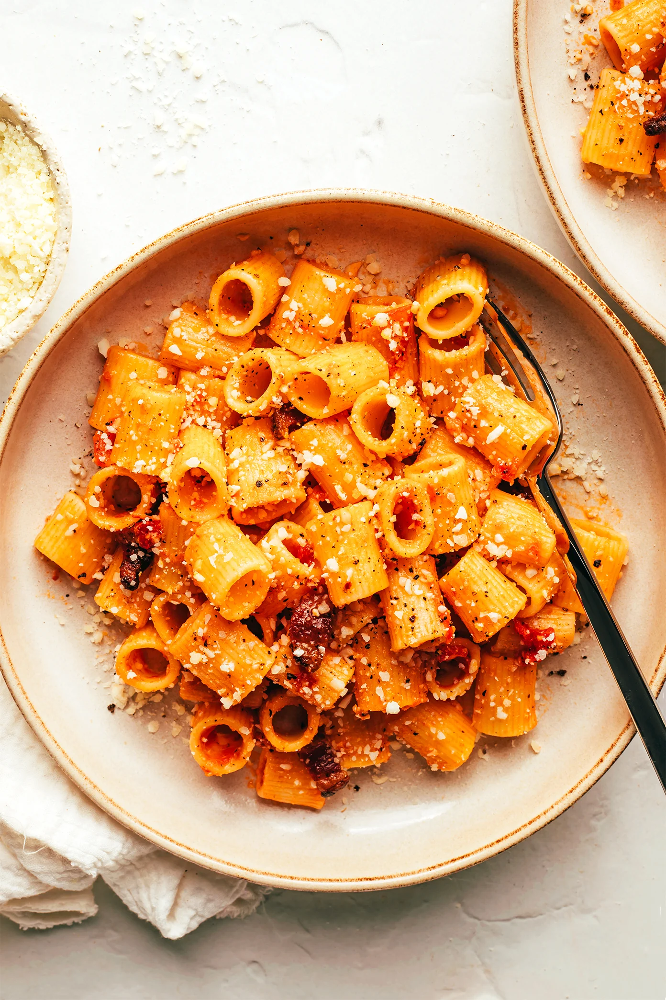

Amatriciana

Description
Amatriciana is a classic tomato based roman pasta. It also includes cured pork for added substance to the dish.
Ingredients
- Pasta: use a thick type such as Bucatini or rigatoni
- Pecorino Romano: Parmigiano may be substituted
- Guanciale: an italian cured pork cheek
- Dry White Wine: used to deglaze the pan but you may substitue water
- Tomatoes: use San Marzano for the best results
- Red Pepper Flakes: a fresh chili pepper is traditional but this is easier
- Salt and Black Pepper: for seasoning
Steps
- Prepare the pasta water. Fill a large stockpot about half full of water (roughly 3 quarts), add 2 tablespoons fine sea salt, and bring the water to a boil.
- Cut the guanciale. Slice the guanciale into ¼-inch-thick slices. Then cut each slice into roughly ½ x 1-inch pieces. (It can help to freeze the guanciale for 10 minutes beforehand to make it easier to cut.)
- Cook the guanciale. Heat a large sauté pan over medium-low heat. Add the guanciale to the pan and cook, stirring and flipping occasionally, until the guanciale is golden brown and crispy and the fat has rendered, about 10 minutes. (Keep a close eye on the guanciale so that it does not burn.) Using a slotted spoon, transfer the guanciale to a separate plate. Pour the remaining fat into a heatproof measuring cup. Measure out ¼ cup of the fat to save, then discard the rest.
- Simmer the sauce. Carefully add the wine to the saucepan and use a wooden spoon to scrape up any browned bits stuck left on the bottom of the pan while the wine simmers. Use your hands to roughly crush the tomatoes into small pieces, then add them to the saucepan. Add the crushed red pepper flakes, cooked guanciale, the reserved guanciale fat and stir to combine. Let the sauce continue to simmer on medium-low while the pasta cooks, stirring it occasionally and adding in a ¼ cup of the starchy pasta water if the sauce starts to seem too dry.
- Boil the pasta. Once the pasta water reaches a rapid boil, add the pasta. Cook, stirring occasionally, until the pasta is about 2 minutes shy of al dente. (The center of the pasta should still have just a slight crunch.)
- Emulsify the sauce. Use a spider strainer or tongs to immediately transfer the pasta to the sauté pan with the tomato sauce. (Be sure to save all of the remaining starchy pasta water in the stockpot.) Gently toss the pasta continuously in the sauce for 2-3 minutes until the pasta is al dente, adding in an extra ¼ cup of the remaining starchy pasta water as needed anytime the sauce seems too dry.
- Finish the pasta. Turn off the heat. Gradually add in the cheese and toss gently until the cheese has melted and the sauce is glossy, adding in an extra few tablespoons of the starchy pasta water when needed to thin out the sauce.
- Serve. Serve immediately, garnished with an extra sprinkle of cheese and twist of black pepper.